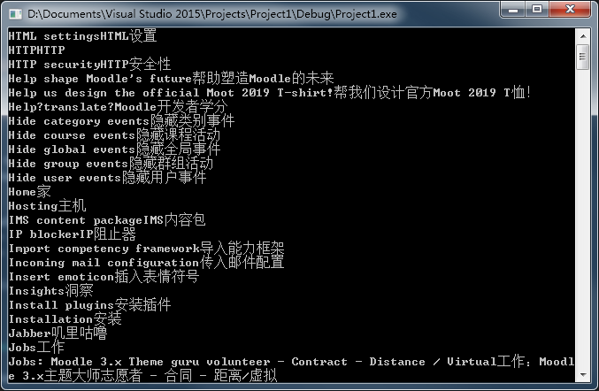

自己平时操作文件用的不多，今天小伙伴让帮忙写一下这个，顺便记一下。实现功能：从"翻译.csv"文件中读取出字符串，以","作为分隔符，将每一行对应存入map中。
代码：
#include <iostream> #include <fstream> #include <string> #include <vector> #include <map> using namespace std; int main() { ifstream inFile("翻译.csv", ios::in); if (!inFile.is_open()) { cerr << "Can't open the file" << endl; } string lineStr; map<string, string> translation; while (getline(inFile,lineStr)) { // 分割字符串 int index = lineStr.find(","); string English = lineStr.substr(0, index); string Chinese = lineStr.substr(index+1, lineStr.size()-1); // 存入map translation[English] = Chinese; } //输出 for (map<string, string>::iterator iter = translation.begin(); iter!=translation.end();iter++) { cout << iter->first << iter->second << endl; } system("pause"); return 0; }
运行结果：
